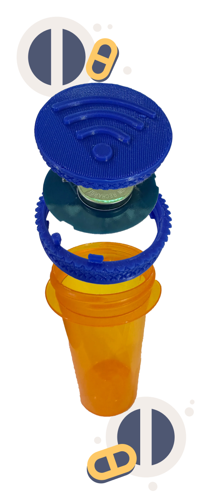

Matt Channon, founder of PillCall, invented a device and surrounding system to serve the unmet need to remind people when they forget, but not remind them when they remember. Dozens of other products run reminders to jar people out of their daily routine in order to take their medicine. While this works for a few people, most people hate interruptions, particularly stupid interruptions (such as a reminder to take their pill when they already have or were going to). Even people who benefit from these reminders quickly grow to resent their intrusive nature and will either stop using them or anticipate their annoyance and never start. A product that makes people hate using it is a bad product.
On March 31, 2015, Amazon launched the Dash Button. It was a tiny battery powered thumb-sized computer that did nothing except send a very simple and unchanging message to Amazon over Wi-Fi when you pushed its switch, the idea being a household might tape these next to household goods, so they could order refills from Amazon directly, right from where they’re used, when they start to run out. In theory, laundry detergent or toilet paper would show up a couple days later, exactly when needed, without the use of a computer or smartphone to place the order.
Matt Channon was impressed by the dash button and began to consider if there might be some sort of inverse for the dash button: “something that does nothing when you push its button, instead of doing something”, and eventually “something that does nothing when you don’t push its button, instead of doing something.” Channon paired this with the observation that otherwise intelligent people were predictably irrational, even though they knew in advance they would be irrational. Millions get stuck with bank fees for making payments late, or waiting too long to buy airline or concert tickets and having to pay extra, or end up with gym memberships they never used, or fail to feed parking meters in time. So many businesses in the world today are not just making some, but almost all, of their profit, off people simply forgetting to do the simplest things, even with plenty of advance notice. This is the new reality of the Attention Age: distraction means profit.
Realizing the above, Channon wondered, how about a business that makes all its money by helping people not forget the important things in their lives? There has to be a value there, since people know they’re going to forget, forget anyway, and suffer anyway. Enter PillCall.

Matt Channon, founder of PillCall, is an experienced business owner with considerable and multidisciplinary background in the tech industry. While earning a B.S. in Materials Engineering at New Mexico Tech, Matt designed and built solar arrays for two solar cars that competed successfully in 1000-mile races. While at Sandia Labs, he helped advance some of the earliest 3-D printing technology.
While Matt was earning an M.S. at Georgia Tech, he started a DVD rental machine business four years before the first Redbox. Matt has spent the past five years developing the PillCall Pill Cap, the flagship product of PillCall, Inc. 2